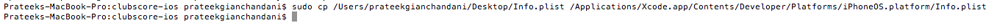

Usually, to test apps on a device, you need to be a registered developer which costs about $99/year. For people who want to learn IOS Application security, it is very important that they should be able to run applications on device so that they can perfom tests on them. For some people who do not want to publish any apps on the app store, it may not be worth it to pay the $99/year fees. In this article we will be looking at how we can build and install an application on a jailbroken idevice without having a registered developer account. Then in the next article we will look at how we can run our own applications on the device and use Cycript to perform method swizzling and other techniques.
This article will focus on running custom apps on device using Xcode 4.5.2 on IOS 5.1 . This same technique might or might not work on other versions of IOS or Xcode. If you face some problems running the application on device, please drop a comment and i will respond to that asap.
The first step is to create a self signed certificate. We will use this certificate to sign thw apps that we want to run on the device.
Open the Keychain Access application. Tap on Keychain Access –> Certificate Assistant –> Create a Certificate
Name the certificate, in this case Prateekg, select the certificate type as Code Signing and do not check the option Let me Override defaults. Click on Create and tap on Continue.

As you can see, our certificate has been created.
Now copy the Info.plist file from the location /Applications/Xcode.app/Contents/Developer/Platforms/iPhoneOS.platform/Info.plist to your Desktop. We are doing this because we want to edit this file but we cannot do it on its original location. So in order to do this, we first have to copy this file to Desktop, edit it and then put it back.
{kind=link}
Open it up.

Click to Enlarge
Now in this file, replace all occurences of XCiPhoneOSCodeSignContext with XCCodeSignContext and save it. Here it how your file should look like.
Now copy this file back from where you fetched it. You will need to have appropriate permissions for this. The command in my case is sudo cp /Users/prateekgianchandani/Desktop/Info.plist /Applications/Xcode.app/Contents/Developer/Platforms/iPhoneOS.platform/Info.plist

Now its time to create a sample Xcode project. Open up Xcode, click on Create a new Xcode Project, Select Single View Application
Name the projet anything, in this case SelfSignedApp, click on Next, then click on Create
Since we will be running this app on a device running IOS 5.1, we need to make sure the deployment target matches that. Tap on the project name in the Project Navigator on the top left, select the project and then inside Info, set the Deployment target to 5.1 as shown in the figure below. You can choose your deployment target depending on the operating system you are running your device on.
For cases where we are running the app on IOS 5.1, since we have a storyboard in this app, and because IOS 5.1 does not support the Autolayout feature in Storyboards, the app will crash. Hence make sure that the Use Autolayout option is not selected on the storyboard.
Now just drag and drop a label into the storyboard and write some text on it.
Now we have to tell Xcode to sign this app using our self generated certificate. To do that, tap on the project name in the Project Navigator on the top left, select the project and then inside Build Settings, select the certificate that we created a while back. If the certificate doesn’t show up in the dropdown for some reason, try restarting code.
Now select the device that you want to run the app on. If for some reason, the device doesn’t show up on the list, go to Organizer –> Devices –> Your device and click on Use for development.
After you have selected the device, click on Run and you will get a warning as shown in the image below. Click on Always Allow.You might get an error on the device or in Xcode but the app will be installed on the device. So just disconnect your device from your computer, quit the current instance of the app and run it again. It will now run the app without any troubles.
There are some other ways to run the app on the device as well. Just build the app and that will create a .app file inside a particular directory in Xcode. The default location for that build is /Users/$[YOUR_USER_NAME]/Library/Developer/Xcode/DerivedData/$[YOUR_APP_NAME_APP_ID]/Build/Products/Debug-iphoneos/. In my case, the location is /Users/prateekgianchandani/Library/Developer/Xcode/DerivedData/SelfSignedApp-bfzixtyoynrxxlgigskifizrfqqw/Build/Products/Debug-iphoneos/
Let’s copy the .app file to Desktop using the following command.
mv /Users/$[YOUR_USER_NAME]/Library/Developer/Xcode/DerivedData/$[YOUR_APP_NAME_APP_ID]/Build/Products/Debug-iphoneos/SelfSignedApp.app /Users/$[YOUR_USER_NAME]/Desktop/
Now create a folder named Payload, put the SelfSigned.app file under it, compress that folder (it will be initially named as Payload.zip) and name it SelfSigned.ipa .As we saw in part 2 of this series, this is the bundle in which IOS applications are stored.
Once we have the ipa file, there are 2 ways to install it. One is to just drag and drop this ipa file into the apps section in iTunes, then use iTunes to install the app on the device.
Another technique is to upload this ipa file to the device using sftp and then use a utility called installipa to install it on your device.Installipa can be downloaded directly onto your device using Cydia.
Upload the ipa file to your device using sftp.
Then ssh into your device and install the app using the command line utility installipa
This will install the application on your device. You might have to restart or respring the device for the app to function properly.
Conclusion
In this article, we looked at how we can install custom applications on the device without a valid developer certificate. In the next article, we will be using these techniques to install our own applications on the device and then perform various tests on them.